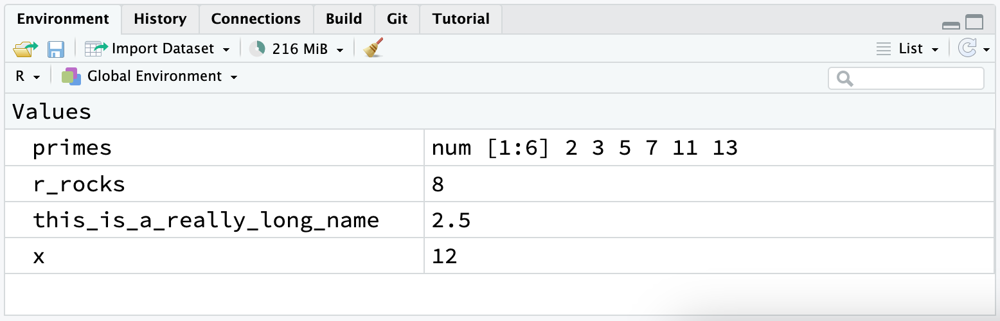

1 / 200 * 30
#> [1] 0.15
(59 + 73 + 2) / 3
#> [1] 44.66667
sin(pi / 2)
#> [1] 12 Workflow: basics
You are reading the work-in-progress second edition of R for Data Science. This chapter is largely complete and just needs final proof reading. You can find the complete first edition at https://r4ds.had.co.nz.
你现在已经有一些运行 R 代码的经验了。 虽然我们没有给你太多细节，但显然你已经掌握了基础知识，否则你就会因为沮丧而放弃这本书了！ 当你开始使用 R 编程时，沮丧是很自然的，因为它对标点符号非常严格，即使一个字符放错位置也会引起错误。 但是尽管你可能会感到一些挫败，要安慰自己的是，这种经历是典型的和暂时的：每个人都会经历这个阶段，克服它的唯一办法就是不断尝试。
在我们继续之前，让我们确保你在运行 R 代码方面有坚实的基础，并且了解一些最有帮助的 RStudio 功能。
2.1 Coding basics
让我们回顾一些基础知识，为了尽快让您开始绘图，我们在之前省略了一些内容。 您可以使用 R 进行基本的数学计算：
您可以使用赋值运算符 <- 创建新的对象：
x <- 3 * 4请注意，变量 x 的值不会被打印出来，它只是被存储起来了。 如果您想查看该值，请在控制台中输入 x。
您可以使用 c() 将多个元素组合（combine）成一个向量：
primes <- c(2, 3, 5, 7, 11, 13)对向量进行基本的算术运算会应用到向量的每个元素：
primes * 2
#> [1] 4 6 10 14 22 26
primes - 1
#> [1] 1 2 4 6 10 12所有在 R 中创建对象的语句，也就是赋值（assignment）语句，都具有相同的形式：
object_name <- value在阅读这段代码时，在脑海中可以说 “object name gets value”。
您将会进行很多赋值操作，而 <- 的输入可能会很麻烦。 您可以使用 RStudio 的快捷键来节省时间：Alt + - （减号）。 请注意，RStudio 会自动在 <- 周围添加空格，这是一个很好的代码格式化习惯。 代码有时可能很难阅读，因此请给你的眼睛一些休息，并使用空格来提高可读性。
2.3 What’s in a name?
对象名称必须以字母开头，只能包含字母、数字、_ 和 .。 你希望你的对象名称具有描述性，因此你需要采用一种适用于多个单词的约定。 我们推荐使用蛇形命名法（snake_case），其中你用下划线（_）分隔小写单词。
i_use_snake_case
otherPeopleUseCamelCase
some.people.use.periods
And_aFew.People_RENOUNCEconvention当我们在 Chapter 4 中讨论代码风格时，我们将再次回到命名问题。
你可以通过输入对象的名称来检查它：
x
#> [1] 12提供另一个赋值：
this_is_a_really_long_name <- 2.5要检查这个对象，可以尝试使用 RStudio 的自动补全功能：输入 “this”，按下 TAB 键，在唯一前缀之前添加字符，然后按回车键。
假设你犯了一个错误，this_is_a_really_long_name 的值应该是 3.5，而不是 2.5。 你可以使用另一个键盘快捷键来帮助你进行修正。 例如，你可以按 ↑ 键来调出你最后输入的命令并进行编辑。 或者，输入 “this”，然后按下 Cmd/Ctrl + ↑ 键，以列出以这些字母开头的所有命令。 使用箭头键导航，然后按回车键重新输入命令。 将 2.5 更改为 3.5 并重新运行。
提供另一个赋值：
r_rocks <- 2^3让我们尝试检查它：
r_rock
#> Error: object 'r_rock' not found
R_rocks
#> Error: object 'R_rocks' not found这说明了你和 R 之间的默契协议：R 会为你完成繁琐的计算，但作为交换，你必须在指令上完全准确。 如果不准确，你可能会收到一个错误，提示找不到你要查找的对象。 拼写错误是有影响的；R 无法读懂你的心思，说：“哦，他们在输入 r_rock 时可能是想表达 r_rocks。” 大小写也很重要；同样，R 无法读懂你的心思，说：“哦，他们在输入 R_rocks 时可能是想表达 r_rocks。”
2.4 Calling functions
R 有一个庞大的内置函数集合，调用方式如下所示：
function_name(argument1 = value1, argument2 = value2, ...)让我们尝试使用 seq() 函数，它可以创建序列（sequences）的数字。同 时，我们也可以了解一些 RStudio 的其他有用功能。 输入 se，然后按下 TAB 键。 一个弹出窗口将显示可能的自动补全选项。 通过输入更多字符（例如，q）来指定 seq()，以消除歧义，或者使用 ↑/↓ 箭头选择。 注意弹出的浮动工具提示，提醒你函数的参数和用途。 如果需要更多帮助，按下 F1 键可以在右下方的帮助选项卡中获取所有细节。
当你选择了你想要的函数后，再次按下 TAB 键。 RStudio 将会为你添加匹配的左括号（(）和右括号（)）。 输入第一个参数的名称 from，并将其设置为 1。 然后，输入第二个参数的名称 to，并将其设置为 10。 最后，按下回车键。
seq(from = 1, to = 10)
#> [1] 1 2 3 4 5 6 7 8 9 10在函数调用中，我们经常省略前几个参数的名称，因此我们可以将其重写如下：
seq(1, 10)
#> [1] 1 2 3 4 5 6 7 8 9 10输入以下代码，并注意 RStudio 提供了类似的帮助来配对引号：
x <- "hello world"引号和括号必须总是成对出现。 RStudio 尽力帮助你，但仍然有可能出错，导致不匹配。 如果出现这种情况，R 会显示续行字符 “+”：
> x <- "hello
++ 符号告诉你 R 正在等待更多的输入；它认为你还没有完成。 通常，这意味着你可能忘记了一个 " 或者一个 )。要么添加缺失的配对，要么按下 ESCAPE 键中断表达式，然后重试。
请注意，右上方的环境选项卡（Environment tab）显示了你创建的所有对象：

2.5 Exercises
-
为什么这段代码不工作？
my_variable <- 10 my_varıable #> Error: object 'my_varıable' not found仔细看！ （这可能看起来毫无意义，但当你编程时，训练你的大脑注意到即使是微小的差异也会有所回报。）
-
调整以下每个 R 命令，使其能够正确运行：
libary(todyverse) ggplot(dTA = mpg) + geom_point(maping = aes(x = displ y = hwy)) + geom_smooth(method = "lm) 按下 Option + Shift + K / Alt + Shift + K。 会发生什么？ 如何通过菜单到达相同的位置？
-
让我们重新审视 Section 1.6 中的一个练习。 运行以下代码行。 两个图中的哪一个会保存为
mpg-plot.png？ 为什么？my_bar_plot <- ggplot(mpg, aes(x = class)) + geom_bar() my_scatter_plot <- ggplot(mpg, aes(x = cty, y = hwy)) + geom_point() ggsave(filename = "mpg-plot.png", plot = my_bar_plot)
2.6 Summary
现在你对 R 代码的工作原理有了更多了解，还学到了一些提示，可以帮助你在将来回顾代码时更好地理解它。
在下一章中，我们将继续你的数据科学之旅，教你如何使用 dplyr 这个 tidyverse 包来转换数据，无论是选择重要变量、筛选感兴趣的行，还是计算摘要统计信息。
2.2 Comments
R 会忽略
#后面的任何文本。 这允许您编写注释（comments），即 R 忽略但供其他人阅读的文本。 我们有时会在示例中包含注释，以解释代码的运行过程。注释可以用于简要描述以下代码的作用。
像这样的短小代码片段，可能不需要为每一行代码都留下注释。 但是当你编写的代码变得更加复杂时，注释可以节省你（和你的合作者）很多时间，帮助你理解代码的操作。
使用注释来解释代码的 why，而不是 how 或 what。 代码的 what 和 how 总是可以通过仔细阅读来弄清楚，即使可能会有些繁琐。 如果你在注释中描述了每个步骤，然后更改了代码，你就必须记住同时更新注释，否则当你将来返回到代码时会感到困惑。
弄清楚 why 某些事情被做是更加困难的，甚至是不可能的。 例如，
geom_smooth()函数有一个名为span的参数，用于控制曲线的平滑程度，较大的值会产生更平滑的曲线。 假设你决定将span的值从默认的 0.75 更改为 0.9：未来的读者很容易理解正在发生的是 what，但除非你在注释中记录你的思考过程，否则没有人会明白你 why 改变了默认值。对于数据分析代码，使用注释来解释你的整体攻击计划，并在遇到重要发现时记录下来。 从代码本身无法重新获取这些知识。